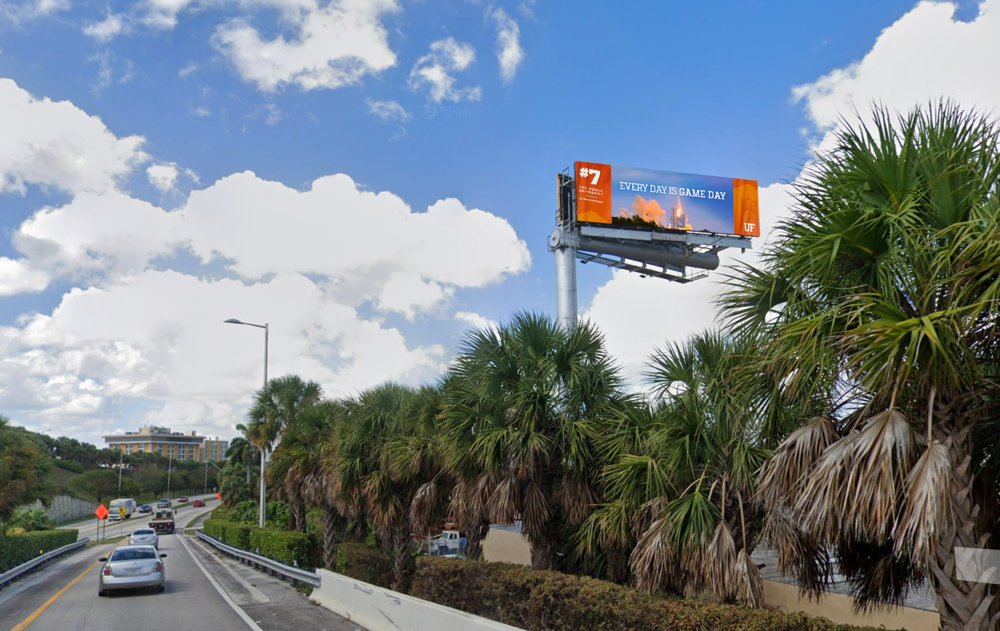

Orange Bowl Blitz
A celebration of University of Florida's off-the-field wins — digital display trucks, billboards, real-time fan UGC, and a hashtag blitz across Miami to own the narrative when Florida met fellow elite public university Virginia in the Orange Bowl.
Celebrate University of Florida's academic rise — #7 among national public universities, up from #19 in 2012 — at the exact moment Gator Nation had a national stage. The Orange Bowl wasn't just a football matchup: UF was facing the University of Virginia, ranked #4 in the US News rankings. The goal was to own both the cultural moment and the academic narrative, using Miami as the canvas.
The spark
When UF received its Orange Bowl selection in December 2019, the art world was buzzing about Maurizio Cattelan's "Comedian" — a banana duct-taped to a wall that had just sold for $120,000. The response was instant: photograph an orange taped to a wall, and post it. The internet got it immediately.

The campaign
The blitz ran across Miami in the days leading up to the game — LED display trucks driving through high-traffic areas, digital billboards broadcasting UF's academic rankings alongside Gator pride, and a coordinated hashtag campaign that gave fans a way to participate from wherever they were.





The social push
Fan UGC flooded in from across Gator Nation. The social team amplified the best of it in real time, turning the community's excitement into the campaign's fuel.

Game day
Photographing fans, capturing moments, and publishing in real time. A 115-photo Facebook gallery and a stream of Instagram Stories and tweets brought the excitement in Miami to all of Gator Nation. The game itself was a fitting close to the campaign: UF beat Virginia 36–28. The final tweet: "Started with a win against Miami. Ended with a win in Miami. It's great to be a FLORIDA Gator!"

The win
In just over 24 hours — not counting impressions from OOH placements across Miami and personal social accounts:
Two elite public universities. One national stage. Both battled on the field, but only one took the fight to the street.